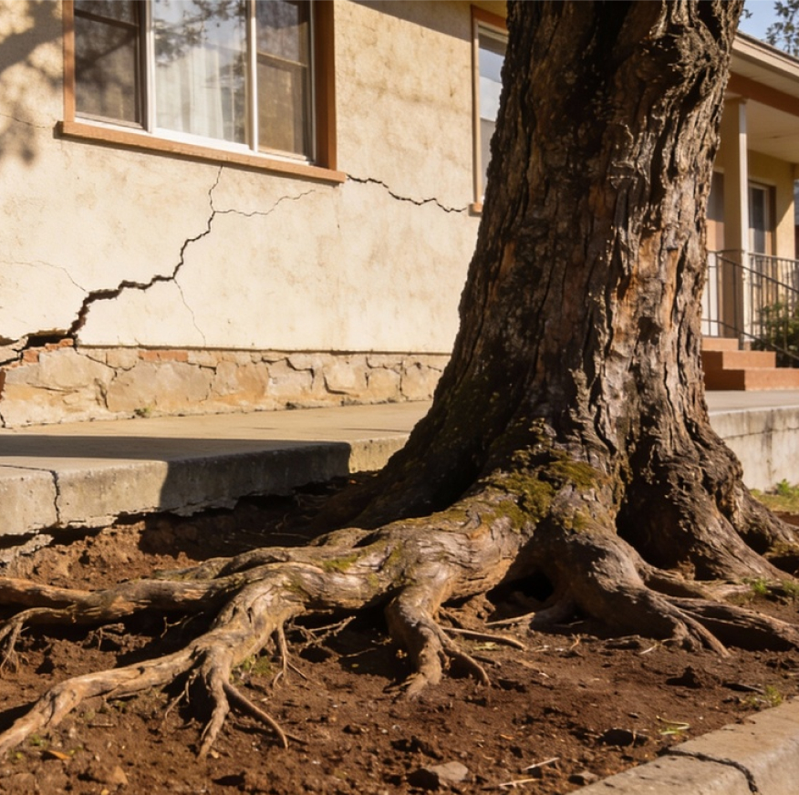

Ocorrência #00342
RELATO DO CIDADÃO
Árvore de grande porte está arrebentando a calçada na Rua das Flores próximo ao número 340, impedindo a passagem de pedestres e cadeirantes. O tronco está parcialmente sobre a fiação elétrica e oferece risco à população. Situação urgente, pois crianças passam por ali no caminho da escola toda manhã.
RELATO DO CIDADÃO

LOCALIZAÇÃO E REGISTRO

ENDEREÇO
Rua das Flores, 340
Centro, Votorantim - SP
COORDENADAS
-23.5412, -47.4472